Home / Past papers / MLP Quiz 1 / this paper
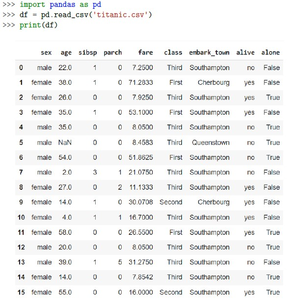
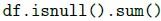
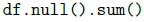
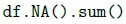
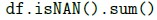
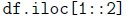
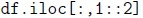
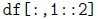
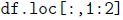
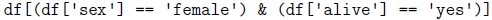
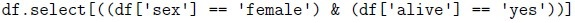
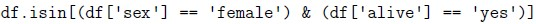
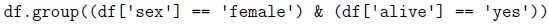
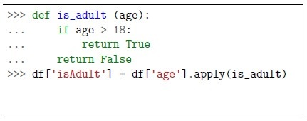
What is the given code below trying to accomplish for the given titanic dataset ?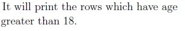
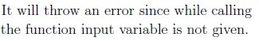
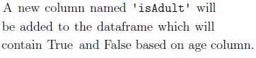
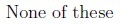
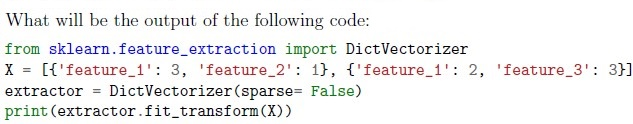
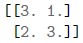
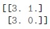
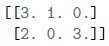
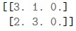
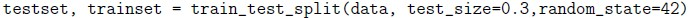
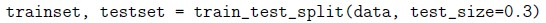
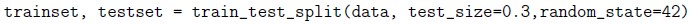
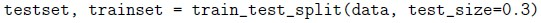
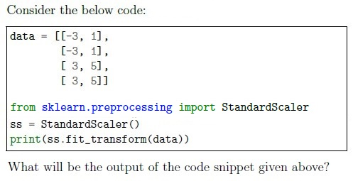
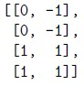
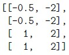
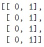
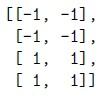
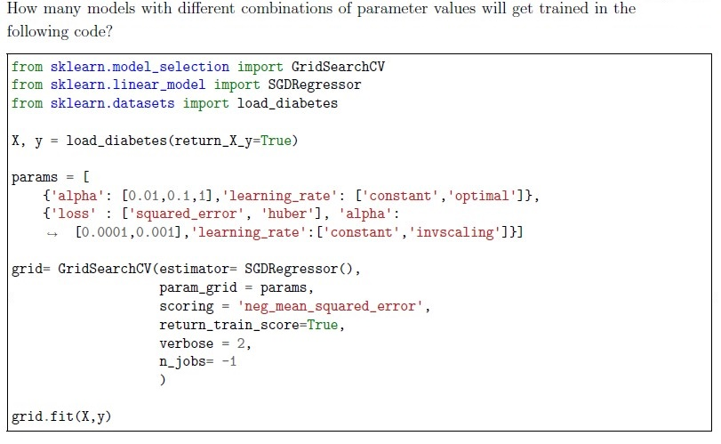
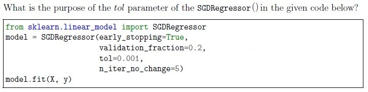
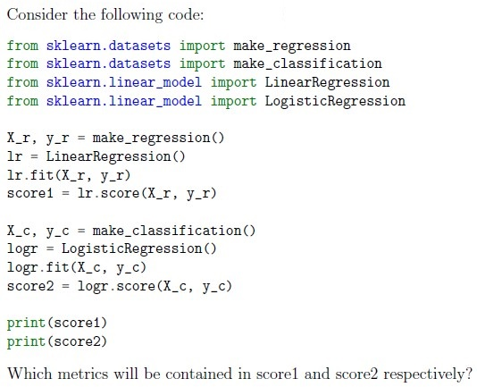
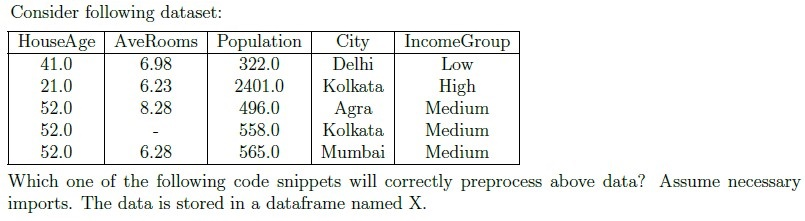
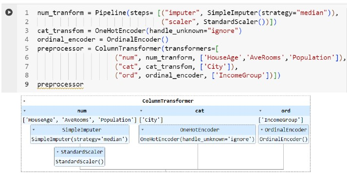
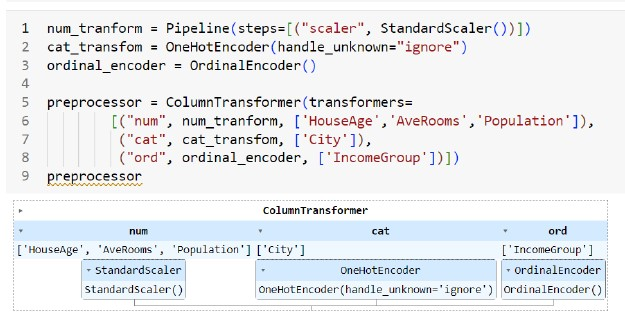
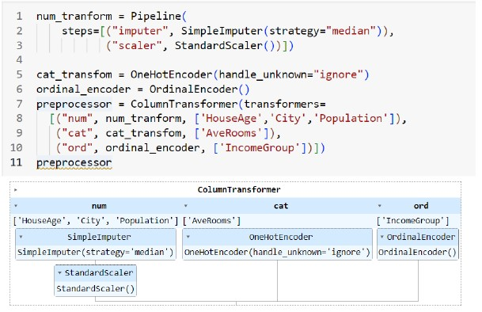
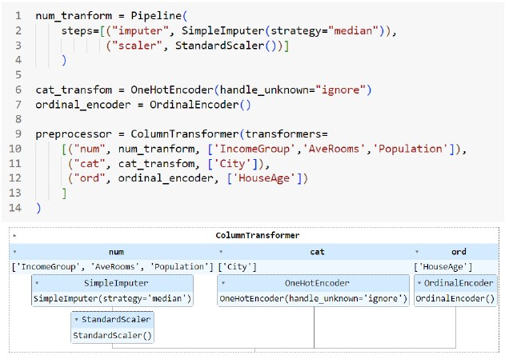
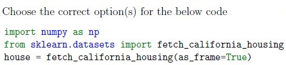
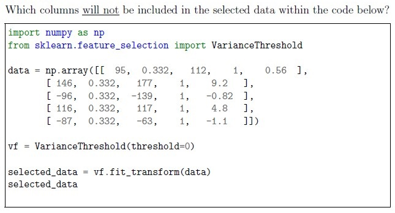
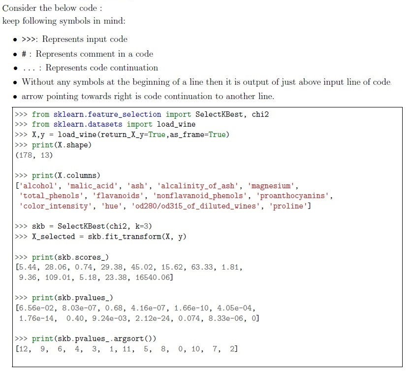
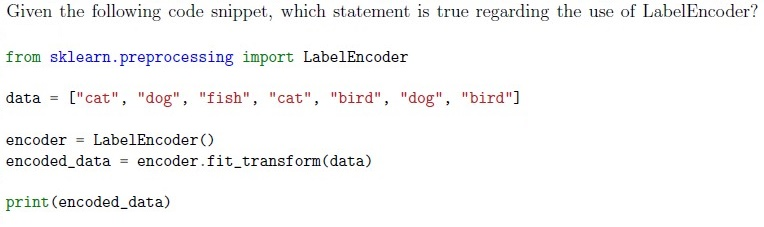
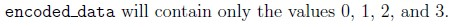
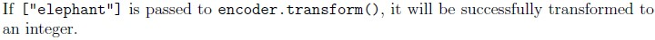
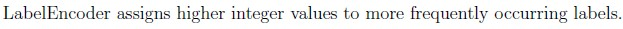
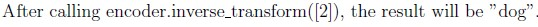
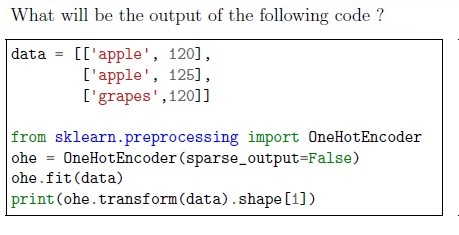
Auto-generated summary from the source site. Handy as a checklist; the lessons above explain each idea from scratch.
DataFrame Operations: Handling DataFrames, checking for NULL values, selecting columns, and filtering data.
df.isnull().sum(): Counts NULL values in each column.df.iloc[:, 1:2]: Selects odd-indexed columns.df[(df['sex'] == 'female') & (df['alive'] == 'yes')]: Filters data based on conditions.Data Types: Understanding data types in DataFrames.
df['sex'].dtype: Determines the data type of a column.Visualization Techniques: Using visualizations to understand data structure and relationships.
StandardScaler: Standardizes features by removing the mean and scaling to unit variance.
StandardScaler().fit_transform(data): Standardizes the data.Label Encoding and One-Hot Encoding: Converting categorical data into numerical format.
LabelEncoder().fit_transform(data): Encodes categorical data.OneHotEncoder().fit_transform(data): One-hot encodes categorical data.Handling Missing Values: Using imputers to handle missing data.
SimpleImputer(strategy="median"): Imputes missing values with the median.Train-Test Split: Splitting data into training and testing sets.
train_test_split(data, test_size=0.3, random_state=42): Splits data into training and testing sets.Model Evaluation Metrics: Metrics for evaluating regression models.
Grid Search and Hyperparameter Tuning: Using GridSearchCV to find the best hyperparameters.
GridSearchCV(estimator, param_grid, scoring='neg_mean_squared_error'): Performs grid search for hyperparameter tuning.Variance Threshold: Selecting features based on variance.
VarianceThreshold(threshold=0).fit_transform(data): Selects features with variance above a threshold.SelectKBest: Selecting the best features based on statistical tests.
SelectKBest(chi2, k=3).fit_transform(X, y): Selects the top k features.